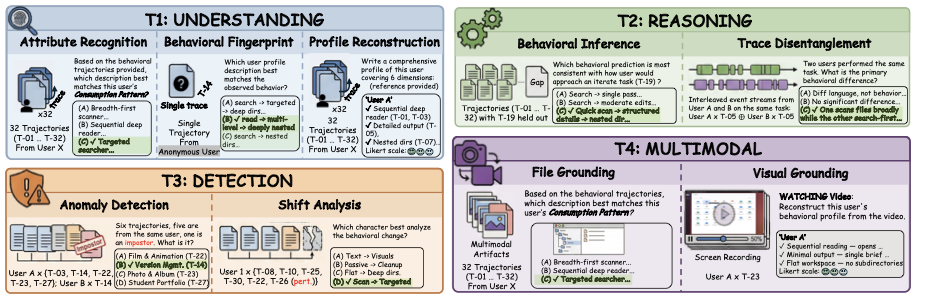
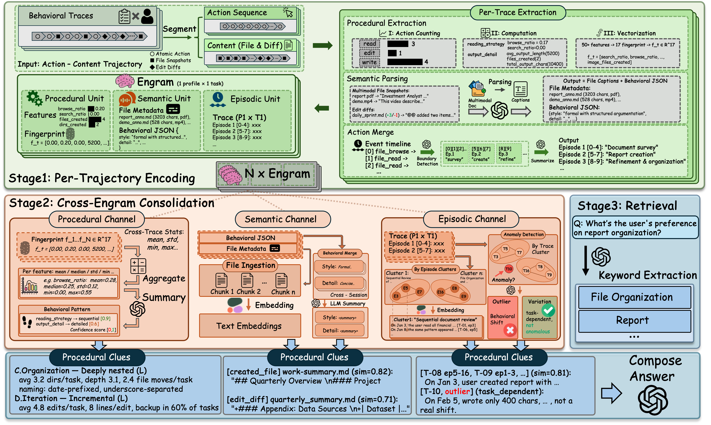
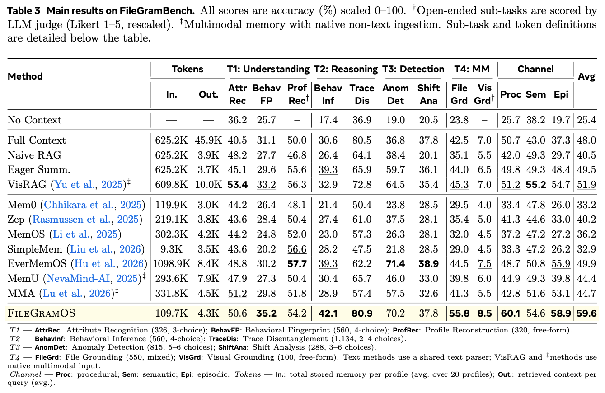
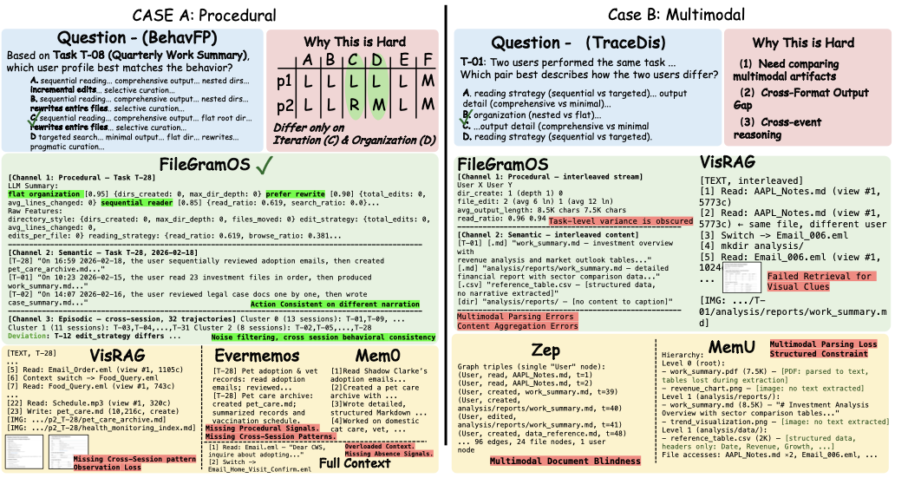

Coworking AI agents operating within local file systems are rapidly emerging as a paradigm in human–AI interaction. Since users exhibit highly diverse workflows, personalization is essential for tight collaboration and a seamless user experience. However, effective personalization is limited by severe data constraints, since strict privacy barriers and the inherent difficulty of jointly collecting multimodal real-world traces preclude the creation of scalable training data and comprehensive evaluation suites. Consequently, existing methods remain interaction-centric and overlook dense behavioral cues embedded in file-level activities. To bridge this gap, we propose FileGram, a comprehensive framework that grounds agent memory and personalization in file-system behavioral traces. FileGram comprises three core components: (1) FileGramEngine, a scalable, persona-driven data engine that simulates realistic workflows; (2) FileGramBench, a diagnostic benchmark that treats file operations as behavioral engrams; (3) FileGramOS, a bottom-up memory architecture that builds user profiles directly from atomic file-level signals. Extensive experiments show that FileGramBench remains challenging for state-of-the-art memory systems, and demonstrate the effectiveness of FileGramEngine and FileGramOS.
Scalable persona-driven simulation producing 640 controlled trajectories with ground-truth labels across 6 behavioral dimensions and 20 user profiles.
First file-system memory benchmark. Four tracks: profile reconstruction, reasoning, anomaly detection, and multimodal visual grounding.
Bottom-up memory building user profiles from atomic file signals—procedural, semantic, and episodic channels—not dialogue summaries.
FileGramEngine simulates realistic file-system workflows via persona-driven agents. Each profile is defined by six behavioral dimensions, producing fine-grained multimodal action sequences at scale.

Example questions from the four evaluation tracks, testing behavioral memory from procedural file operations to cross-modal visual reasoning.

FileGramOS builds profiles from atomic file signals, preserving procedural, semantic, and episodic memory through a three-stage bottom-up pipeline.


Qualitative comparison. Left: A BehavFP question where FileGramOS's three-channel architecture jointly recovers the correct profile, while baselines each miss different signals. Right: A TraceDis question involving multimodal artifacts, where cross-format output gaps cause widespread failures.
@misc{liu2026filegramgroundingagentpersonalization,
title={FileGram: Grounding Agent Personalization in File-System Behavioral Traces},
author={Shuai Liu and Shulin Tian and Kairui Hu and Yuhao Dong and Zhe Yang and Bo Li and Jingkang Yang and Chen Change Loy and Ziwei Liu},
year={2026},
eprint={2604.04901},
archivePrefix={arXiv},
primaryClass={cs.CV},
url={https://arxiv.org/abs/2604.04901},
}